BothWise
Le tue cartelle, uguali ovunque
Guida all'uso
Tutte le funzioni, spiegate con le schermate dell'app
Versione dell'app {{VERSIONE}} · guida aggiornata il {{DATA}}
BothWise tiene uguali delle cartelle su più dispositivi Android (telefoni e tablet) che si trovano nella stessa rete Wi‑Fi. Aggiungi una foto, un documento o un video in una cartella su un dispositivo e dopo pochi istanti la ritrovi sugli altri.

BothWise per Android si scarica gratis da GitHub, dalla pagina delle versioni pubblicate: github.com/CrsLabs/BothWise/releases. Serve Android 10 o più recente.

Gli aggiornamenti arrivano da soli. Una volta a settimana BothWise controlla su GitHub se c'è una versione nuova. Se c'è, ti chiede «È uscita BothWise…» con le novità e i tasti Aggiorna e Più tardi. Con Aggiorna l'app scarica la versione nuova e Android chiede la conferma: cartelle, abbinamenti e impostazioni restano tutti.
In Impostazioni → Aggiornamenti puoi spegnere il controllo settimanale o fare subito Controlla adesso. La prima volta Android chiede di permettere a BothWise di installare app: accendi l'interruttore e torna indietro.
Al primo avvio la Home ti accompagna con il riquadro «Per cominciare»: prima abbini un altro dispositivo, poi scegli la cartella da tenere uguale.
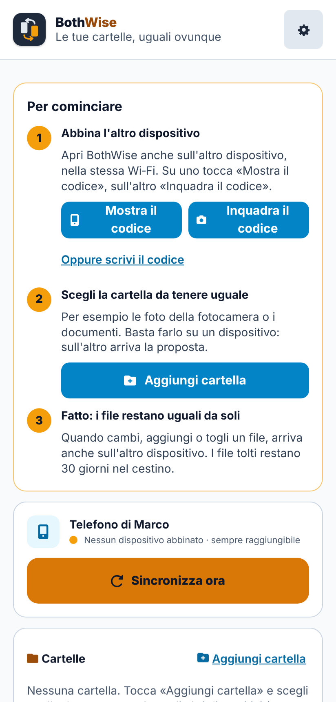
L'abbinamento si fa una volta sola per coppia di dispositivi, con i due dispositivi nella stessa Wi‑Fi e BothWise aperta su entrambi.
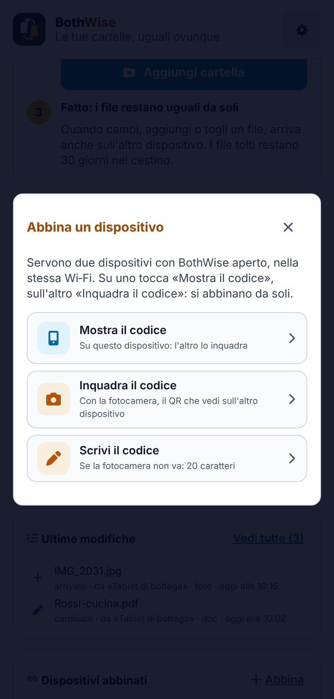
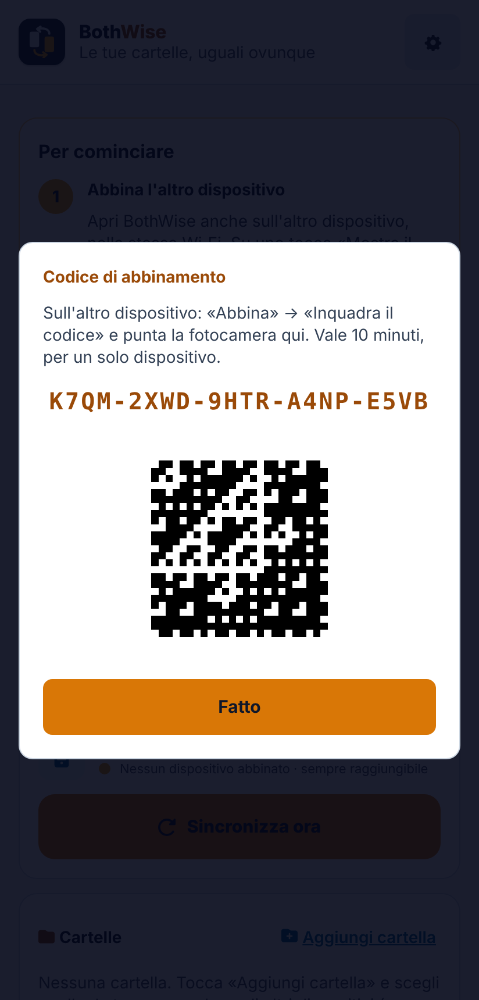
Il tasto Abbina (nella sezione «Dispositivi abbinati», o nel riquadro «Per cominciare») apre le tre scelte: mostra il codice, inquadra il codice, scrivi il codice.
Dopo l'abbinamento BothWise ti propone «Sempre raggiungibile»: dì di sì sul dispositivo che resta acceso (per esempio un tablet) così riceve le modifiche anche quando non lo stai usando.
Tocca Aggiungi cartella nella Home. Android apre il suo selettore: scegli (o crea) la cartella e tocca «Usa questa cartella» e poi «Consenti». BothWise vede solo quella cartella, nient'altro.
Per le cose più comuni ci sono le cartelle pronte: «Foto della fotocamera» (parte già in modalità «Solo invio»), «Documenti» e «Download». BothWise spiega cosa toccare prima di aprire il selettore.
Se su un altro dispositivo aggiungi una cartella, sugli altri compare in cima alla Home un riquadro con il bordo azzurro: «Nuova cartella da sincronizzare», con il nome e chi la condivide. Scegli una cartella di questo dispositivo (anche nuova e vuota) dove far arrivare i file, oppure rifiutala.
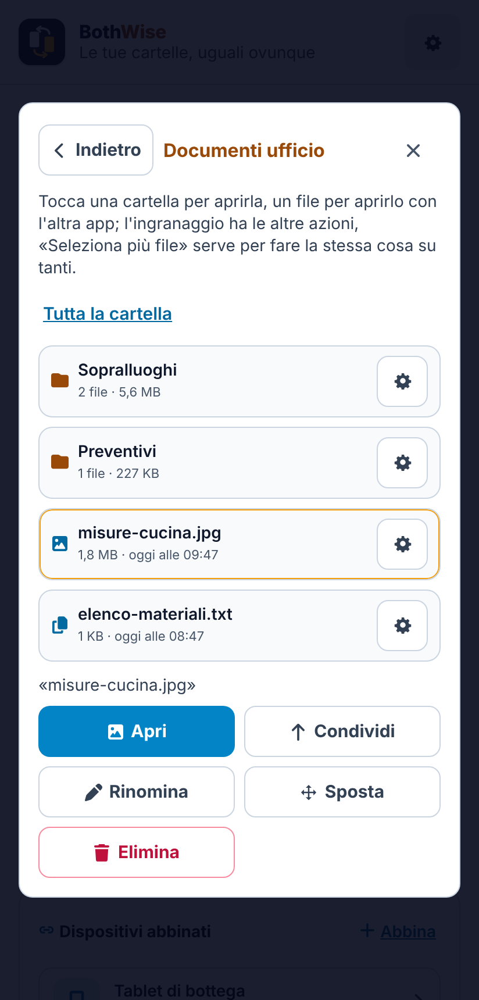
Aprendo una cartella (tocca il suo nome in Home) il tasto «Sfoglia i file» mostra cartelle e file con dimensione e data. Tocca una cartella per entrarci (il tasto «Indietro» in alto a sinistra sale di un livello e, dalla cartella principale, torna alla scheda della cartella; in alto ci sono anche le briciole) e un file per aprirlo con l'app giusta di Android.
L'ingranaggio di ogni riga ha le altre azioni: Apri, Condividi (WhatsApp, posta…), Rinomina, Sposta (scegli la cartella di destinazione e tocca «Sposta qui») ed Elimina. Quello che elimini va nel cestino (30 giorni), anche sugli altri dispositivi dopo la sincronizzazione; niente viene mai sovrascritto. Con «Aggiungi file qui» copi file dal telefono, con «Nuova sottocartella» ne crei una nuova (esiste finché contiene dei file).
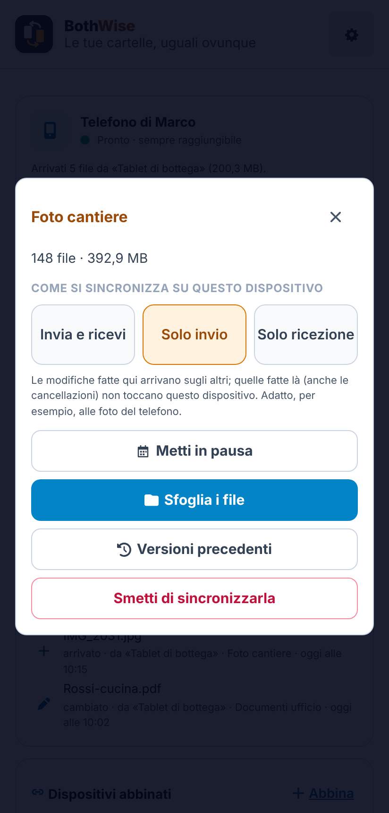
Tocca una cartella per aprire le sue opzioni:
| Modo | Cosa fa |
|---|---|
| Invia e ricevi | Le modifiche vanno e vengono in entrambe le direzioni. È il modo di serie. |
| Solo invio | Le modifiche fatte qui arrivano sugli altri; quelle fatte altrove (anche le cancellazioni) non toccano questo dispositivo. Adatto alle foto del telefono. |
| Solo ricezione | Qui arrivano i file degli altri, ma ciò che cambi qui resta qui. |
Da qui puoi anche mettere in pausa la cartella, vedere le versioni precedenti dei file o smettere di sincronizzarla (i file restano dove sono).
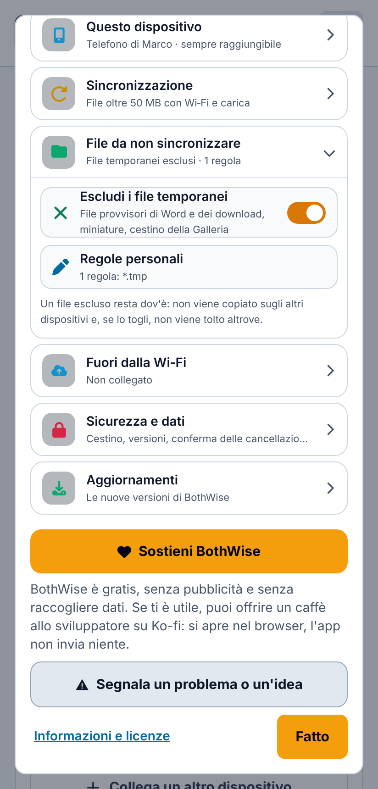
Non tutto va copiato dappertutto. In Impostazioni → File da non sincronizzare trovi:
BothWise si accorge da sola quando una cartella cambia (una foto scattata, un documento salvato) e, se gli altri dispositivi sono raggiungibili, manda subito le novità. Non serve fare niente.
Il grande tasto arancione cerca gli altri dispositivi e li allinea subito. Lo stato sotto il nome dice quanti ne ha raggiunti («1 di 2 raggiungibili»). Un dispositivo spento, lontano o in un'altra Wi‑Fi semplicemente non risponde: non è un errore.
In Impostazioni → Sincronizzazione scegli quando BothWise parte da sola: «Sempre» (appena cambia qualcosa), «Ogni ora» (al più una volta all'ora, per consumare meno batteria) oppure «Solo negli orari»: scrivi giorni e ore (per esempio «lun-ven 18:00-23:00») e fuori da quell'orario aspetta. Il tasto «Sincronizza ora» parte sempre.
Sempre in Sincronizzazione puoi limitare la velocità in invio (5, 2 o 1 MB al secondo) per non intasare la Wi‑Fi di casa mentre mandi file grandi. Il limite vale per ciò che questo dispositivo manda e si cambia senza interrompere i trasferimenti.
Di norma un dispositivo riceve solo quando BothWise è aperta. Con «Sempre raggiungibile» (Impostazioni → Questo dispositivo) resta in ascolto anche con lo schermo spento, in un orario che scegli (per esempio lun–ven 8–18). Compare una notifica fissa. Utile per tablet e telefoni lasciati sulla scrivania.
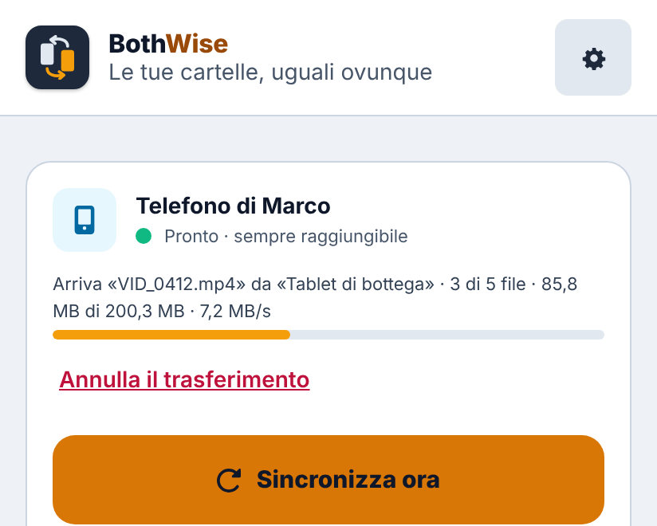
Quando arriva (o parte) un file compare una barra di avanzamento: nome del file, «3 di 5 file», megabyte e velocità. Chi invia la vede come «Invio …», chi riceve come «Arriva …».
Con «Annulla il trasferimento» (su uno qualsiasi dei due dispositivi) i file in arrivo e in partenza si fermano. I file già arrivati restano; la sincronizzazione riparte da sola dopo 15 minuti, o subito con «Sincronizza ora».
Per non scaricare la batteria, di serie i file oltre 50 MB passano solo con il telefono in carica e in Wi‑Fi. Se aspettano, in Home compare «N file aspettano». Puoi cambiare il limite in Impostazioni → Sincronizzazione (50 MB, 200 MB o «Sempre tutti»).

In Home, sotto «Dispositivi abbinati», l'interruttore «Ricevi file» apre la ricezione per 10 minuti: in quel tempo i tuoi dispositivi abbinati ti possono mandare file anche con BothWise chiusa (compare una notifica con «Spegni»). Poi si spegne da solo. Ricevono solo i dispositivi abbinati.
Per averlo sempre a portata di mano, tocca «Metti Invia e ricevi nella barra rapida di Android»: il tasto compare tra quelli di Wi‑Fi e torcia. Un tocco accende la ricezione e apre il pannello «Invia e ricevi»: lì spegni la ricezione oppure scegli un dispositivo e gli mandi un file. Quando arriva un file ricevi una notifica; lo trovi in «File ricevuti».
In Home, sotto «Dispositivi abbinati», «Invia un file a un dispositivo» manda uno o più file solo al dispositivo che scegli (con BothWise aperta, nella stessa Wi‑Fi), senza metterli in nessuna cartella sincronizzata. Sull'altro dispositivo compare l'avviso «ricevuto da…» e, in Home, «File ricevuti»: tocca Salva per metterli dove vuoi, oppure eliminali.
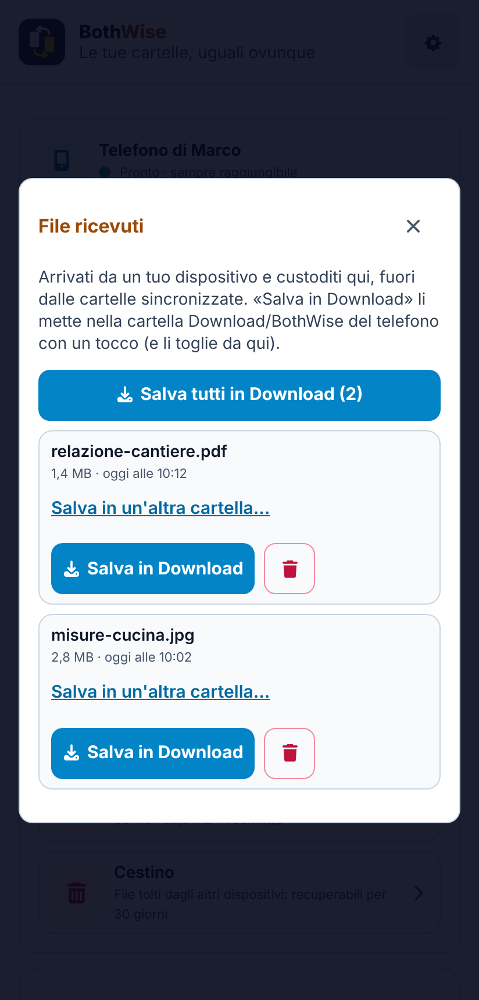
I file che un tuo dispositivo ti manda con «Invia un file» restano qui, fuori dalle cartelle sincronizzate, finché li salvi o li elimini. «Salva in Download» li mette nella cartella Download/BothWise del telefono con un solo tocco (con più file c'è «Salva tutti in Download»); «Salva in un'altra cartella…» ti fa scegliere dove.
Da un'altra app (Galleria, File, WhatsApp…) puoi mandare un file in una cartella sincronizzata senza aprire BothWise:
Se non hai ancora nessuna cartella, BothWise ti dice di aggiungerne una. Con un'annullata i file già copiati restano in «Condivisi».
È la regola numero uno di BothWise: se qualcosa viene tolto o sostituito da un altro dispositivo, lo puoi riavere.
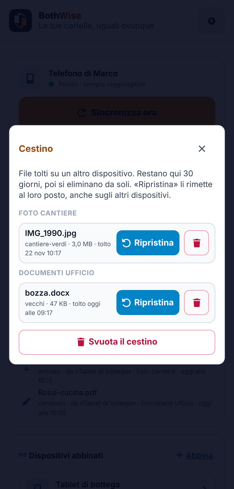
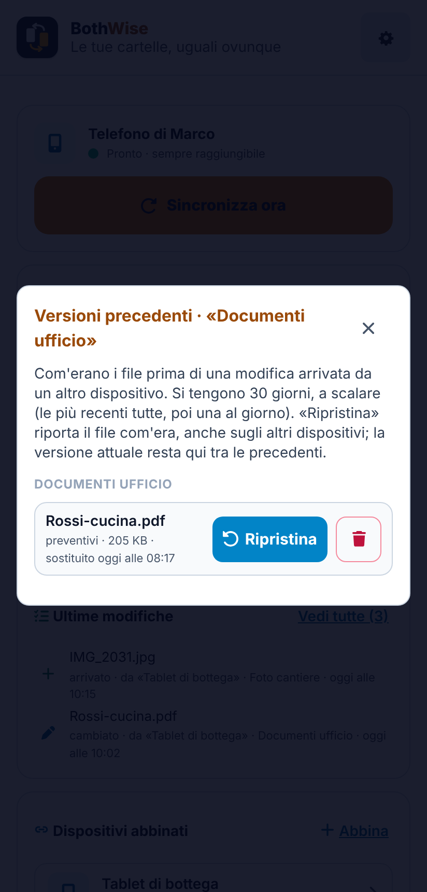
I file tolti su un altro dispositivo non spariscono: finiscono nel Cestino (dalla Home, o da Impostazioni → Sicurezza e dati), per 30 giorni. Ripristina li rimette al loro posto, anche sugli altri dispositivi. Se al loro posto c'è già un file con lo stesso nome, quello recuperato arriva accanto come «nome (ripristinato)»: non si sovrascrive mai niente.
Quando un file viene cambiato da un altro dispositivo, BothWise tiene anche com'era prima, per 30 giorni (si può spegnere nelle Impostazioni). Dalle opzioni della cartella → Versioni precedenti riporti un documento com'era, con conferma.

Di serie le cancellazioni arrivate da fuori vanno subito nel cestino. Accendendo «Chiedi prima di cancellare» (Impostazioni → Sicurezza e dati) i file tolti altrove restano finché decidi tu: dalla Home tocca Controlla e per ogni file scegli «Togli» (va nel cestino) o «Tieni» (resta e torna anche sull'altro dispositivo). Un file che hai cambiato qui nel frattempo resta sempre.
Se lo stesso file viene cambiato in due posti prima che si siano sincronizzati, restano tutti e due: uno con il nome originale e l'altro con «conflitto» nel nome.
Aprendo la cartella (tocca il suo nome in Home) trovi «Due versioni dello stesso file»: per ogni file vedi la dimensione e la data dell'originale e dell'altra versione (con il nome del dispositivo che l'ha creata) e scegli «Tieni l'originale», «Tieni l'altra» o «Tieni entrambe». Niente si perde: quella che non scegli resta 30 giorni nel cestino o tra le versioni precedenti.
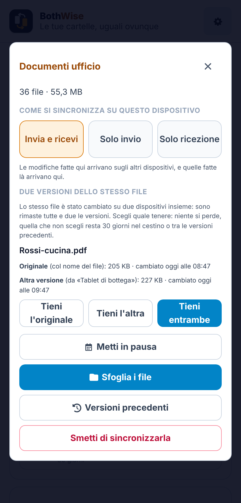
Per ogni file in conflitto vedi l'originale e l'altra versione, con dimensione, data e il dispositivo che l'ha creata. Con un tocco tieni l'una, l'altra o tutte e due: la versione scartata non sparisce, resta 30 giorni nel cestino o tra le versioni precedenti.

Tocca «Collega un altro dispositivo» sotto l'elenco dei dispositivi, e ripeti i passi dell'abbinamento. Con tre o più dispositivi basta abbinare il nuovo con uno solo di quelli che hai già: gli altri lo vengono a sapere da soli entro pochi secondi e compare l'avviso «… aggiunto: te l'ha presentato …».
Nella sua riga leggi l'ultimo contatto. Se passa più di un giorno compare una nota arancione: spento, lontano, o non più in uso. Toccalo per le opzioni.
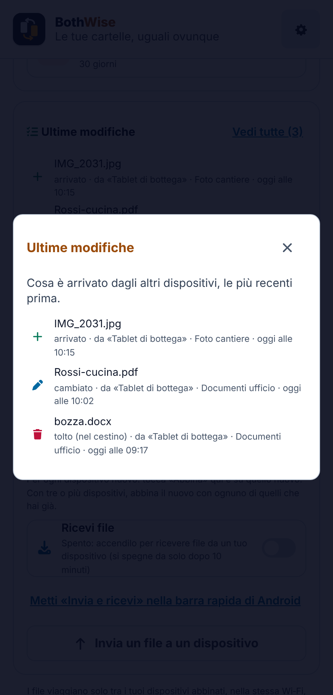
In Home vedi le due più recenti; «Vedi tutte» apre l'elenco completo: cosa è arrivato, cambiato o tolto, da quale dispositivo e in quale cartella.
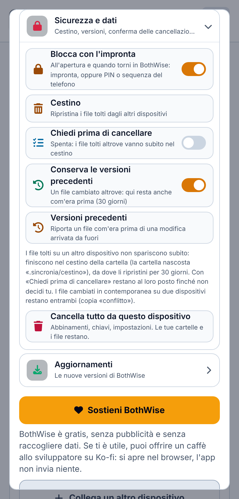
Nella stessa Wi‑Fi i dispositivi si parlano direttamente. Quando sono lontani (uno a casa, uno in cantiere con i dati del telefono), BothWise può usare il tuo Google Drive oppure il tuo Dropbox come cassetta delle lettere chiusa a chiave: ogni dispositivo lascia lì le modifiche cifrate e gli altri le prendono appena possono.
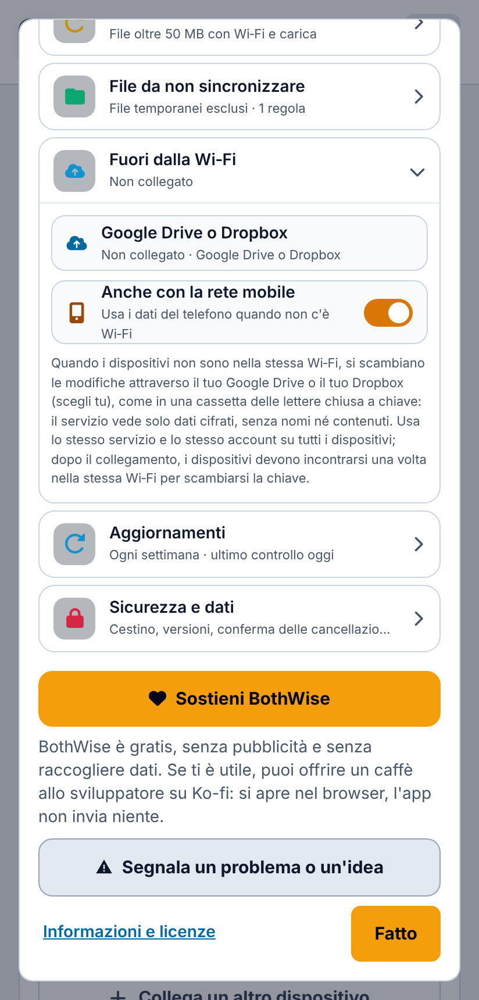

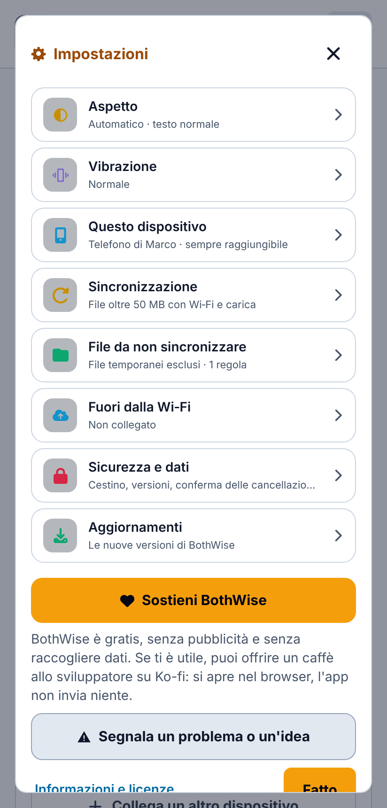

Si aprono dall'ingranaggio in alto a destra. Ogni voce si apre toccandola; toccando fuori dalla finestra (o «Fatto») si chiude.
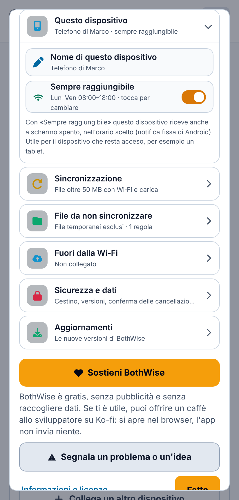

Se scegli le reti Wi‑Fi di fiducia (per esempio «Casa» e «Officina»), BothWise sincronizza solo lì e non nelle Wi‑Fi degli ospiti o pubbliche. Per leggere il nome della rete Android chiede il permesso della posizione (usato solo per questo).
«Segnala un problema o un'idea» prepara un messaggio con la tua descrizione e, se vuoi, le informazioni tecniche (versione, telefono, com'è andato l'ultimo giro di sincronizzazione). Non contiene i tuoi file né i nomi delle tue cartelle. Lo invii tu con la tua app di posta.
| Cosa succede | Cosa fare |
|---|---|
| «Nessuno raggiungibile» | Controlla che i dispositivi siano nella stessa Wi‑Fi (non in quella degli ospiti) e che BothWise sia aperta, oppure «Sempre raggiungibile» sia acceso sull'altro dispositivo. Tocca «Sincronizza ora». |
| Un file grande non arriva | Di serie i file oltre 50 MB passano solo con il telefono in carica e in Wi‑Fi. Guarda in Home «N file aspettano»; metti in carica o scegli «Sempre tutti». |
| Un file è sparito da un dispositivo | Guarda il Cestino: se è stato tolto da un altro dispositivo, lo trovi lì e puoi Ripristinarlo. |
| Compare «… non si trova più» | Una cartella è stata spostata o la scheda di memoria è stata tolta. Rimettila a posto, oppure «Scegli di nuovo la cartella». Dagli altri dispositivi non si toglie niente. |
| Compare «Ridai il permesso» | Android ha tolto il permesso sulla cartella. Toccalo e scegli di nuovo la cartella. |
| «Qui sono spariti N file» | Se è voluto, tocca «È voluto: sincronizza»; altrimenti «Controlla» e recupera i file prima. |
| Un file escluso arriva lo stesso | Controlla la regola (una per riga, es. *.mp4) e prova con un file nuovo, non uno già sincronizzato prima della regola. |
| Il codice di abbinamento non funziona | Controlla di aver scelto «Mostra il codice» sul primo dispositivo e di averlo scritto entro 10 minuti; i due dispositivi devono essere nella stessa Wi‑Fi con BothWise aperta. |
| Da lontano non arriva niente | Controlla che tutti i dispositivi siano collegati allo stesso servizio con lo stesso account (Impostazioni → Fuori dalla Wi‑Fi) e che si siano incontrati almeno una volta nella stessa Wi‑Fi. Se usi i dati del telefono, «Anche con la rete mobile» dev'essere acceso. |
| Non trova gli aggiornamenti | Serve internet. In Impostazioni → Aggiornamenti tocca «Controlla adesso»: il messaggio dice com'è andata. Se Android chiede il permesso di installare app, accendilo e torna indietro. |
| Un'altra cosa | Impostazioni → Segnala un problema o un'idea, lascia acceso «Aggiungi le informazioni tecniche» e scrivi cosa è successo. |
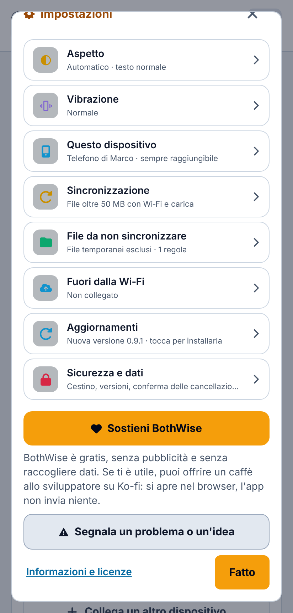
BothWise è gratis, senza pubblicità e senza raccogliere dati. Se ti è utile, il tasto Sostieni BothWise apre nel browser la pagina ko-fi.com/crslabs, dove puoi offrire un caffè allo sviluppatore. L'app non invia niente.
Versione dell'app, sviluppatore (CrsLabs), contatti e licenze dei componenti usati. BothWise è software libero (licenza GNU GPL 3.0): il codice è su github.com/CrsLabs/BothWise.
Qui si aggiunge una riga a ogni nuova versione.
| Versione | Novità |
|---|---|
| 0.9.4 | Fuori dalla Wi‑Fi, sotto il nome del dispositivo non compare più «Nessuno raggiungibile»: si legge «sincronizzato tramite Google Drive» (o Dropbox) con l'ora, pallino verde. |
| 0.9.5 | Nell'elenco dei file di una cartella c'è il tasto «Indietro»: sale di un livello e, dalla cartella principale, torna alla scheda della cartella. Il tasto Indietro del telefono fa la stessa cosa. |
| 0.9.3 | Fuori dalla Wi‑Fi, con l'app aperta, la casella si controlla ogni minuto: modifiche e dispositivi dimenticati arrivano da soli; «Scollega e cancella» avvisa se la cartella resta nel Drive; Impostazioni più fluide. |
| 0.9.2 | Fluidità dello schermo a scelta (automatica, massima, 60 Hz); Impostazioni come in DoctorCar (Aspetto nello stesso ordine, Aggiornamenti uguale e in fondo); BothWise è software libero (GPL 3.0). |
| 0.9.1 | Fuori dalla Wi‑Fi attivo: i dispositivi lontani si scambiano le modifiche attraverso il tuo Google Drive o il tuo Dropbox, cifrate. |
| 0.9.0 | Aggiornamenti automatici da GitHub (controllo una volta a settimana, «Controlla adesso», si può spegnere); guida e tutorial in sei parti, con l'indice delle pagine. |
| 0.8.13–0.8.16 | Fondo delle Impostazioni come nelle altre app CrsLabs (Sostieni BothWise e Segnala, verso crslabs.info@gmail.com); il tema cambia in un colpo solo e segue quello del telefono; barra di stato leggibile con il tema chiaro; informazioni a nome CrsLabs. |
| 0.8.2 | Aggiungere file con un nome già usato: l'app chiede se tenere tutti e due (il nuovo prende un numero, e te lo dice) o sostituire (il vecchio resta tra le versioni); dopo aver risolto due versioni dello stesso file compare una finestra che dice cosa è successo. |
| 0.8.1 | Salvare i file ricevuti con un tocco («Salva in Download»); Indietro dentro le cartelle sale di un livello; rinominare una cartella non lascia quella vecchia; un nome già usato (anche con maiuscole diverse) viene rifiutato con un messaggio; «Annulla il trasferimento» vale anche per chi riceve. |
| 0.8.0 | Sfoglia i file di una cartella dall'app (apri, condividi, rinomina, sposta, elimina, aggiungi file, nuova sottocartella); «Ricevi file» come AirDrop, con interruttore in Home e tasto nella barra rapida di Android. |
| 0.7.0 | Quando sincronizzare (sempre, ogni ora, solo negli orari); velocità massima in invio; due versioni dello stesso file: scegli quale tenere dall'app; «Invia un file a un dispositivo» e «File ricevuti»; English (Impostazioni → Aspetto → Lingua). |
| 0.6.6 | «Annulla il trasferimento» e «Annulla la copia»; barra di avanzamento anche per chi invia; il limite dei file grandi si cambia senza interrompere i trasferimenti; le regole di esclusione valgono anche per file già noti. |
| 0.6.5 | Meno consumo di batteria (niente blocchi della Wi‑Fi, controlli più radi a schermo spento); l'impronta si chiede all'uscita vera dall'app, non con la tendina delle notifiche. |
| 0.6.4 | Tastiera sopra le finestre corretta; la barra di avanzamento della condivisione avanza anche durante un invio. |
| 0.6.3 | Più dispositivi che si presentano da soli; notifiche chiudibili scorrendole; chiusura delle finestre come l'apertura. |
| 0.6.2 | Barra di avanzamento per i file condivisi; «Ultime modifiche» ridotte; «Collega un altro dispositivo»; lettura del QR più veloce; schermo alla frequenza più alta. |
| 0.6.0 | Fuori dalla Wi‑Fi con Google Drive o Dropbox (pronto, da attivare); vibrazione su tutti i tasti. |
| 0.5.x | Apertura con il logo; blocco con l'impronta; controlli di sicurezza. |
| 0.4.0 | Protezioni, spostamenti riconosciuti, abbinamento con QR, notifiche, condizioni per i file grandi, cartelle pronte, «Condividi con BothWise», pausa. |
BothWise è costruita su PairWood, il motore di sincronizzazione scritto da zero insieme alle app CrsLabs.